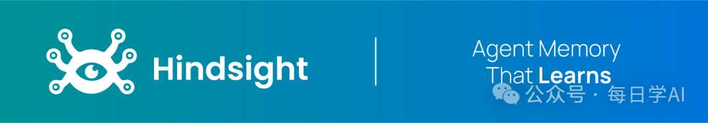
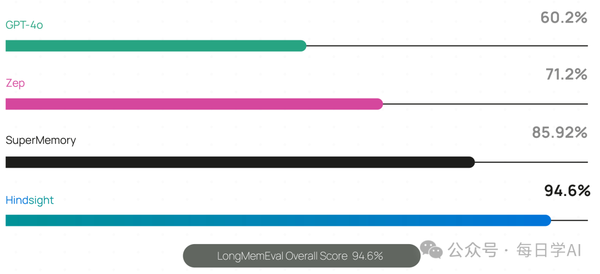
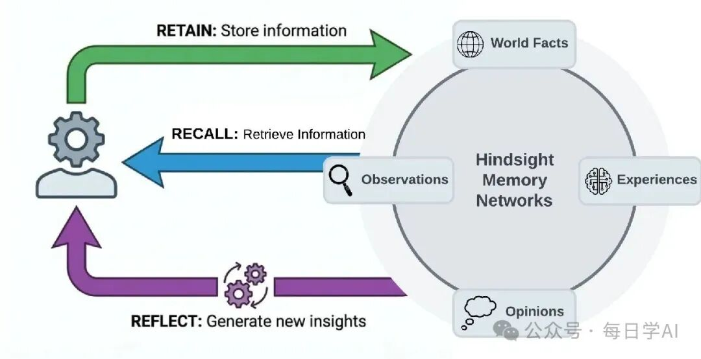
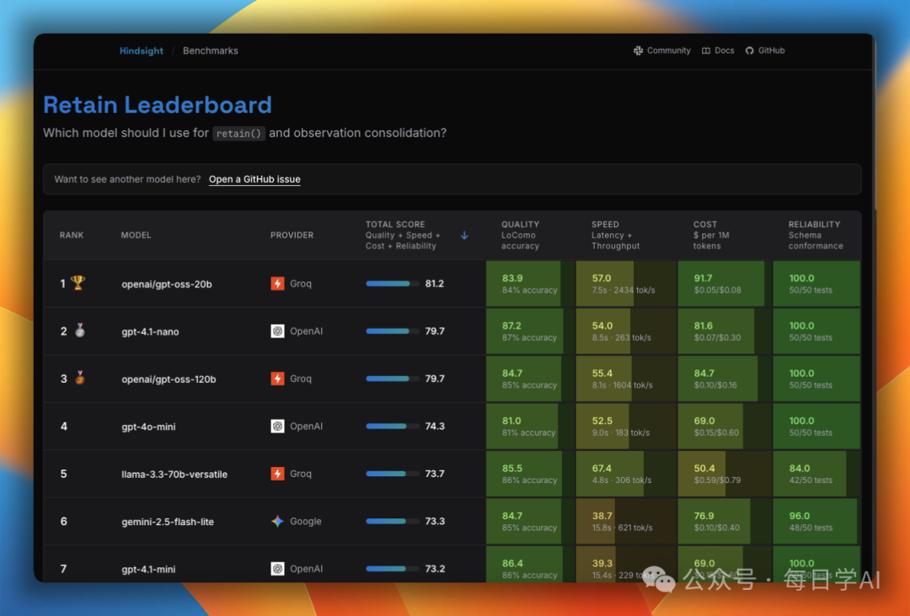

碾压GPT-4o！94.6%准确率的开源Agent记忆Hindsight来了
来源：微信公众号 归档日期：2026-09-30 抓取状态：成功 原文字符：8181｜配图：4 张
摘要速览
- 开源 Agent 记忆项目 Hindsight：LongMemEval 从 60.2% 拉到 94.6%，卖点不在检索——给 Agent 的记忆是「学得到」而非只是「记得住」（规范隔周就忘、同坑踩三次的解法）。拆解四类记忆结构、观察精炼机制，以及一张能省钱的模型选型榜。
核心内容
（待补充）
可执行启发
（待补充）
我的想法
（待补充）
原文沉淀
目录
摘要 上周交代过的规范这周全忘了，同一个坑它踩了三次——我们给 Agent 加记忆，多半只是让它「记得住」，而不是「学得到」。开源项目 Hindsight 在 LongMemEval 上把成绩从 60.2% 拉到 94.6%，卖点却不在检索。本文拆解它的四类记忆结构、观察精炼机制，以及那张能帮你省钱的模型选型榜。

先说一个常见误会
「你的知识库答不准？换个更好的向量库。」——这句话在过去两年被说了无数遍，但大多数情况下，问题不在检索那一层。
检索只是个捞东西的动作。捞上来的东西本身是什么形态，才决定了你能捞到什么。
举个具体的例子。用户说过三句话：去年 6 月「我在字节做后端」，今年 3 月「我跳槽去了美团」，上周「我现在带六个人的团队」。这三句在向量库里就是三条互相独立的记录，相似度检索会把它们一起捞出来，但它不知道第一条已经过期了。模型拿到的是一堆没有时间关系、没有主次、没有冲突标记的碎片，然后被要求从中推理出「他现在在哪工作」。
这就是为什么上下文越塞越满，Agent 还是显得很蠢。
今天要讲的这个开源项目，做的事就是改掉这个前提。它没有去做一个更强的检索器，而是先把记忆存成另一种东西。
它是什么
Hindsight，由 Vectorize.io 开源，协议 MIT，主语言 Python。它的官方定位句很直白：「Agent Memory That Learns」——让 Agent 学会，而不只是记住。
官方 README 里有一句话把它的差异讲得最清楚：大多数 Agent 记忆系统专注于复述对话历史，Hindsight 关注的是让 Agent 真正学习。
数据摆一下（GitHub API 在 2026 年 9 月 28 日的数值）：
| 指标 | 数值 |
|---|---|
| Star / Fork | 39,120 / 5,155 |
| 关注人数 / 开放 issue | 88 / 182 |
| 创建时间 | 2025 年 10 月 30 日 |
| 最新版本 | v0.10.1（2026 年 9 月 21 日） |
| 协议 / 主语言 | MIT / Python |
另外一个细节能说明它的状态：抓取那天（9 月 28 日）它的仓库还有新的代码推送。
而在成绩上，它拿出的数字确实很有冲击力：

LongMemEval 总体成绩：Hindsight 94.6%、SuperMemory 85.92%、Zep 71.2%、GPT-4o 60.2%
在 LongMemEval 这个衡量长期记忆的基准上，Hindsight 是 94.6%，同一张榜单上 SuperMemory 是 85.92%、Zep 是 71.2%、GPT-4o 是 60.2%。
这里还有一层信息比分数更重要：这组成绩由弗吉尼亚理工的 Sanghani 人工智能与数据分析中心以及华盛顿邮报独立复现过，而榜单上其他厂商的分数都是自报的。在一个所有人都在报自己分数的领域里，「被第三方复现」本身就是一种稀缺。
那它到底改了什么前提？三件事。
差别一：四类记忆，把「证据」和「推断」分开存
大多数记忆实现只有一种东西：一条记录。Hindsight 把记忆分成了四类，而且这个分法是有认识论含义的：
•世界事实：关于外部世界的陈述——「炉子会烫」
•经历：Agent 自己的经历——「我碰了炉子，真的很疼」
•观察：从大量记忆中合并出来的、有证据支撑的信念
•心智模型：从观察和事实中合成出来的、对所处世界的理解
看清楚这里的层次：前两类是原料，后两类是结论。原料和结论分开存，好处是——当一条结论出错时，你能沿着链条退回去查到它是从哪几条事实推出来的。
记忆被写进来的时候，会先走一遍「世界事实」或「经历」这两条通路，然后被表示为实体、关系和时间序列的组合，同时带上稀疏与稠密两种向量表示，供后面的召回使用。
↓ 三大操作与四类记忆网络的关系

Agent 通过 retain 把信息推入记忆网络，通过 recall 从观察层取回内容，通过 reflect 在已有记忆上推理、生成新洞见——三者构成一个循环
这张图把整体关系讲清了：Agent 通过 retain 把信息推入记忆网络，通过 recall 从观察层取回相关内容，通过 reflect 在已有记忆上做推理、生成新的洞见——三者构成一个循环。
差别二：观察会被「精炼」，不会被覆盖
这是整套设计里我最欣赏的一处。
事实存进去之后不会一直是一堆平铺的碎片。在后台，Hindsight 会把相关的事实合并成观察——也就是这个记忆库随时间建立起来的、去重后的信念。
关键在于它怎么处理冲突：每条观察保留自己的支撑证据、原始引文，以及一个「证明计数」。当新证据到来时，观察是被「精炼」而不是被覆盖的——新信息会去加强、削弱或扩展一条已有的信念，而不是悄悄把它替换掉。
配套的还有一个趋势标记，按证据的时间分布来算：
•STABLE：证据跨越时间分布，且延续到现在
•STRENGTHENING：近期证据更多、更密
•WEAKENING：证据大多陈旧，近期稀疏
•NEW：所有证据都在近期窗口内
•STALE：近期没有任何证据
这套东西解决的是记忆系统最尴尬的一个问题：用户改了主意，系统却还抱着旧结论不放。传统做法是直接覆写——于是你丢掉了「他曾经这么想」这个信息，也丢掉了验证的机会。Hindsight 的选择是保留整条证据链，然后告诉你这条信念现在是在变强还是变弱。
差别三：心智模型读一次，就是一次数据库读
「心智模型」这个概念值得单独说，因为它直接关系到成本。
定义很朴素：它是针对某个问题的一次定型回答。比如「这个用户有什么偏好？」你把问题定义一次，Hindsight 会把答案写出来、存起来，并在后台随着记忆库的学习不断重写。
它的执行方式才是重点：读一个心智模型是一次数据库读——不触发检索，也不调 LLM。
这句话的分量在于成本。传统记忆方案的每一轮对话都要走一遍「检索 → 重排 → 塞进上下文」，token 花在每次调用上。而心智模型是提前算好、按需读取的——Agent 可以在启动时直接加载一页已经沉淀好的知识，而不是每个会话都重新发现一遍。
官方还给了一层更省事的封装叫知识页：把机制藏起来，就是记忆库写给自己看的活文档，按文件夹组织、可搜索，还能投射到磁盘上变成普通的 markdown 文件。
顺带说两个容易被忽略的设计：
•多语言是端到端保留的。输入语言会被识别并保持到最后——事实用它原本的语言存着，实体的字形也不改，「张伟」不会被规范化成 "Zhang Wei"。
•记忆库的隔离是严格的。一个 bank 就是「一个大脑」，对应一个用户、一个 Agent 或一个项目，官方明确写了不存在跨库泄漏。而且每个 bank 可以带一套性格特质（怀疑、字面、共情），用来影响 reflect 阶段的推理方式。
回到标题：检索它其实也做了
到这里要先澄清一件事，免得把话说偏了：Hindsight 并不是没做检索优化，恰恰相反，它做得相当激进。
一次 recall 会并行跑四条检索通路：
•语义：向量相似度
•关键词：BM25 精确匹配
•图：实体、时间、因果之间的链接
•时间：按时间范围过滤
四条路的结果合并之后，用倒数排名融合（RRF）排序，再过一遍交叉编码器重排模型，最后按 token 上限裁剪——注意是「按预算裁剪」而不是固定取前 K 条，这样提示词大小和 API 成本是可预测的。
四条并行加上重排，这已经是相当强的检索工程。所以「靠的不是更好的检索」这句话，准确的意思是：
检索是一道工序，而它把功夫花在了这道工序之前——记忆被存成了什么形态。一条带时间标记、带证据引用、带证明计数、并且会和旧结论做冲突标记的记忆，用普通的检索就能捞对；而一堆没有时间关系的文本碎片，用再好的检索器也只能捞出一堆碎片。
检索决定了你捞得准不准，记忆结构决定了你有没有东西可捞。大多数方案的瓶颈在后者。
最实用的一节：该用哪个模型来做记忆
这一节是我认为最值得单独拎出来的，因为它是真能省钱的。
记忆系统有个隐藏成本：它不是只在对话时花钱。retain 要调 LLM 抽取事实，观察合并要调 LLM，reflect 更要调 LLM。你等于给每一次交互又叠了一层模型开销。很多人算 Agent 成本时只算了回答那一次，漏掉的正是这里。
Hindsight 的做法是把这件事变成一个可以查表的问题。官方基准站上放了一张 Retain Leaderboard，专门回答「做 retain 和观察合并，我该用哪个模型」，按质量 + 速度 + 成本 + 可靠性四项加权排名：
↓ Retain Leaderboard：按质量+速度+成本+可靠性排名

榜首是 openai/gpt-oss-20b（跑在 Groq 上），总分 81.2：LoCoMo 准确率 84%、延迟 7.5 秒、每百万 token 成本 0.05 / 0.08 美元、模式一致性 50/50 全对。后面依次是 gpt-4.1-nano、gpt-oss-120b、gpt-4o-mini……
这张表传达的信息很明确：记忆这一步不需要最贵的模型。用一个 20B 的开源模型，就能把准确率做到 84%，成本压到每百万 token 五分钱。把最强的模型留给真正需要推理的环节，钱花在刀刃上。
顺带说，它一共支持 25 种以上的模型提供方，包括本地跑的（Ollama、LM Studio、llama.cpp）、任何 OpenAI 兼容端点、以及网关。还有一个容易被低估的设计：它支持你已有的订阅——ChatGPT Plus/Pro、Claude Pro/Max、Cursor、GitHub Copilot 都能直接用，不需要额外 API key。
接得上才算数
一个记忆系统再好，如果要改一堆代码才接得进去，也只是个玩具。Hindsight 在这一点上给的方案比较简单粗暴：
最省事的接法是两行代码。装一个包，把你原来的 LLM 客户端包一层：
BASH
pip install hindsight-litellm
PYTHON
from openai import OpenAI
from hindsight_litellm import wrap_openai
client = wrap_openai(OpenAI(), bank_id="user-123")
包完就结束了。之后每次调用，记忆会在请求前被召回、在请求后被存入，你的业务代码一行都不用改。底层是 LiteLLM，所以同一套写法覆盖 100 多种模型；wrap_anthropic() 对应 Anthropic 的 SDK。
如果需要对「什么时候存、什么时候取」有精确控制，可以直接用 SDK 或 REST API——三条核心操作就三个方法：retain 存、recall 取、reflect 推理。客户端有 Python、Node.js、Go 和 CLI。
其他几条接入路径：
•60 多个集成，多数不需要写代码。编码 Agent 覆盖 Claude Code、Codex、Cursor、GitHub Copilot、opencode、Cline、Aider、Zed、Continue、Roo Code、OpenHands；框架覆盖 LangGraph / LangChain、LlamaIndex、CrewAI、Pydantic AI、OpenAI Agents SDK、Google ADK、Agno、Strands、AutoGen、微软 Agent Framework、Vercel AI SDK、Haystack；低代码有 n8n、Zapier、Dify、Flowise。
•编码 Agent 有单独的一包：按仓库自动建 bank，从 git 历史和过往会话里生成，启动时注入，还附带一份记录架构、约定和进行中工作的知识页。安装就是一条 npx 命令。
•每个服务自带 MCP 端点，每个 bank 一个，默认开启。任何支持 MCP 的客户端指过来，就能把 retain / recall / reflect 当工具用。
•部署方式五选一：Docker（推荐）、外接 PostgreSQL、pip 裸机、K8s Helm、托管云。另外还有一个无服务器的嵌入式模式——pip install hindsight-all，把服务直接跑在你的进程里，连 Docker 都不用开。
生产环境那块也没糊弄：存储是 PostgreSQL + pgvector，或者 Oracle 的 AI Database 23ai（官方称功能对齐）；配置分三级（全局环境变量 → 租户 → bank）；有 Prometheus 指标、管理 CLI、webhook 事件，以及租户 / 鉴权 / 存储三类扩展点。
局限与风险
说到这里都是好话。接下来这段更重要——它不解决什么，以及用之前要认清什么。
•第一，基准的成绩有明确边界。LongMemEval 测的是对话记忆，它不测代码生成、多步推理、工具调用这些场景。而很多 Agent 恰恰活在后几类场景里。一个能记住三周前用户偏好的系统，不代表它能在跨天的 50 文件重构里保持方向。94.6% 是个很硬的数字，但它只回答了一个问题。
•第二，官方自己划了适用范围。README 写得很清楚：它适合需要处理开放式任务、需要根据用户反馈改变行为、需要学会完成复杂任务的 Agent；而对 n8n 这类简单工作流「可能属于杀鸡用牛刀」。一个记忆系统引入的复杂度，对小场景来说是纯负担。
•第三，嵌入式模式是个明确的取舍。无服务器模式确实很方便，但它把记忆和应用放进了同一个进程、同一个生命周期——这等于放弃了水平扩展和独立升级的空间。托管云解决扩展性，代价是数据要出本机，延迟和数据驻留就成了要谈的问题；自托管 Docker 或 K8s 最灵活，运维的账得你自己扛。三条路各有各的代价，没有全赢的那条。
•第四，存储路线相对收敛。官方支持的是 PostgreSQL + pgvector，或 Oracle 23ai。单库部署很省事，但对追求极致检索性能的团队来说，可调的手段不如专用向量库丰富。
•第五，记忆的治理责任还在你手上。它提供的是按 bank 的严格隔离，加上一个可选的 Memory Defense——按 bank 开启，用 45 条规则扫描每次 retain 的内容，命中密钥或个人信息时要么脱敏成 [REDACTED:github_token] 这种形式，要么直接拦截。这解决的是「别把密钥写进记忆」，但同意、删除、保留期这些合规层面的东西，它不替你设计。真实业务里最常见的追问——「用户要求删除全部记忆时你删得干净吗」——答案是架构给你工具，方案要你自己出。
•第六，成本要算总账。retain、观察合并、reflect 每一步都在调模型。用量大的时候，token 费用不容易预估，这本身就需要先量一遍。那张排行榜能帮你把单价压下来，但压的是单价，不是次数。
•第七，它还是个新项目。182 个开放 issue 说明迭代活跃，也说明还有不少没磨完的边角。企业级能力里，SSO、RBAC、自带云这类通常只在商业版本里提供——对已经在合规框架下跑的团队，这是一开始就得确认的事。
写在最后
这个项目最值得学的地方，不是它拿了多高的分，而是它换了问题。
大多数人在问「怎么检索得更准」，它问的是「你凭什么指望一堆没有时间、没有证据、没有冲突标记的文本碎片，能支撑起推理」。前者是个工程优化题，后者是个数据结构题。它选了后者，然后分数自己上去了。
而它最实用的一处设计，反而是那张排行榜——它等于公开承认：记忆这件事不需要最聪明的模型，只需要把该记的记住、该改的改对。把最强的模型留给推理，把最便宜的模型留给记忆，这才是 Agent 成本结构该有的样子。
回到标题那句话。94.6% 和 60.2% 之间差的，从来不是检索器的强弱，而是你有没有把记忆存成能被推理的样子。
项目地址
GitHub：https://github.com/vectorize-io/hindsight 官方文档：https://hindsight.vectorize.io/ 论文：https://arxiv.org/abs/2512.12818 协议 MIT · 文中仓库数据截至 2026-09-28
END
— 谢 · 谢 · 观 · 看 —
如果本文对你有帮助，点个赞 + 在看，是对我最大的鼓励 ❤️
关注我，每日学AI，每天进步一点点
这里有 AI 前沿 · 开源一线 · 实战教程
归属：[[02-输入/按主题/AI与效率/_index|AI与效率]]